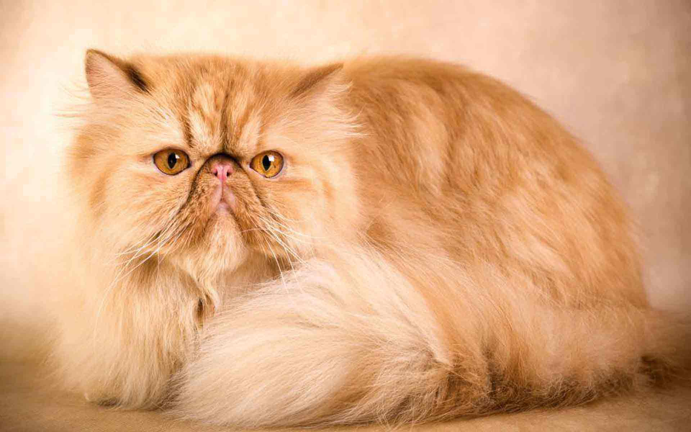
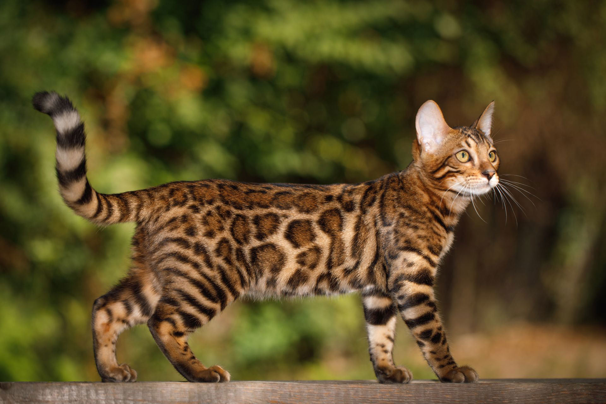

Популярные породы

Персидская кошка — спокойная, уравновешенная и очень пушистая. Любит внимание и уют.

Сфинкс — дружелюбная, активная, любит быть рядом с человеком. Требует ухода за кожей.

Бенгальская кошка — подвижная, умная, с красивым леопардовым окрасом.